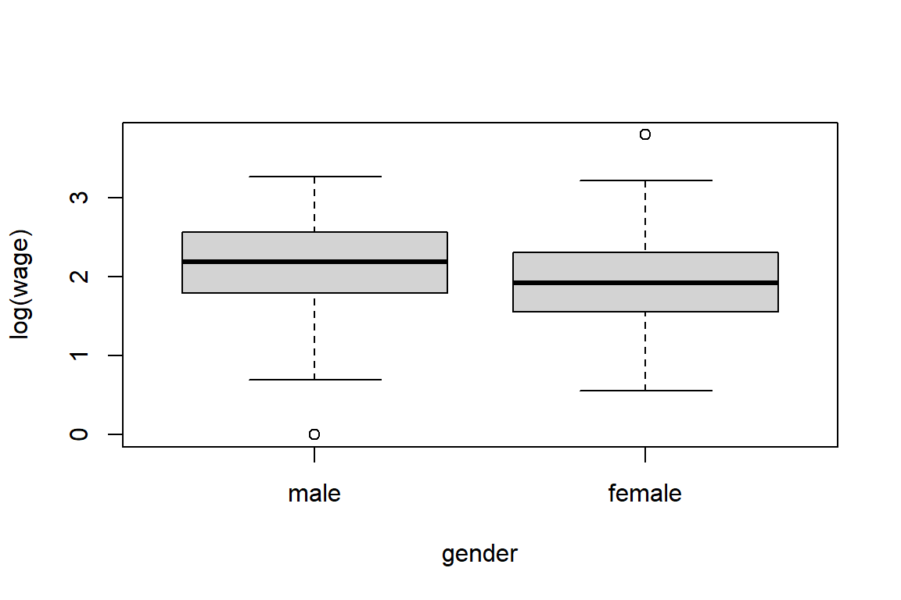
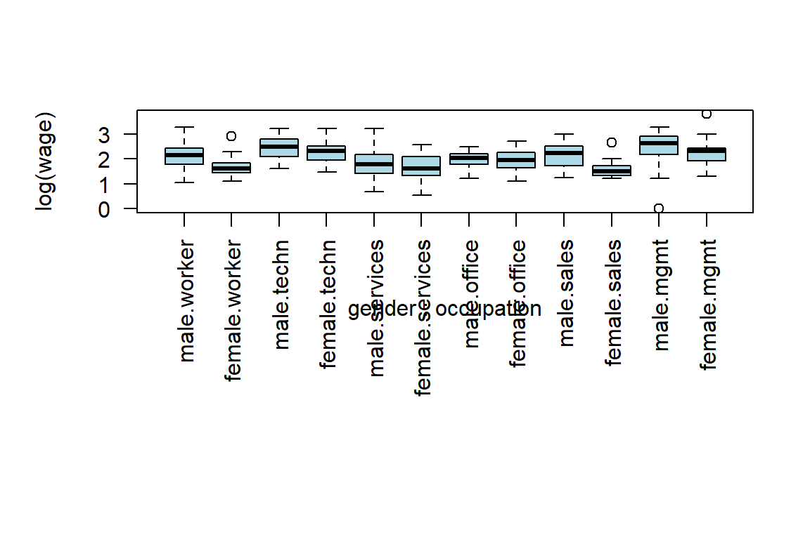

4 Getting started with data in R
4.1 Importing data
Importing data into R to start your analyses-it should be the easiest step. Unfortunately, this is almost never the case. Data come in all sorts of formats, ranging from CSV and text files and statistical software files to databases and HTML data. Knowing which approach to use is key to getting started with the actual analysis. (Quote from DataCamp’s ‘Importing Data in R (Part 1)’ course)
The default location where R will look or store files, is your working directory (Venables, Smith, and R Core Team 2020). When opening an RStudio project, the working directory is automatically set to the folder where the .Rproj file is located.
# what is the current working directory?
getwd()
# which files are currently stored in my working directory?
dir()To change the working directory, we use the setwd() function.
If we have stored the data in a subfolder of our current working directory, we can specify the path as follows.
Creating a subfolder for your data files a good way to keep your files and project organized. When learning R, however, it may be easier to use the function file.choose() to use the point and click approach to select your file.
4.1.1 Importing a .csv file with read.csv()
The utils package, which is automatically loaded in your R session on startup, can import CSV files with the read.csv() function. You will now load a data set on swimming pools in Brisbane, Australia (source: data.gov.au). The file contains the column names in the first row and uses commas to separate values within rows (CSV stands for comma-separated values). (Quote and example from DataCamp’s ‘Importing Data in R (Part 1)’ course)
'data.frame': 20 obs. of 4 variables:
$ Name : chr "Acacia Ridge Leisure Centre" "Bellbowrie Pool" "Carole Park" "Centenary Pool (inner City)" ...
$ Address : chr "1391 Beaudesert Road, Acacia Ridge" "Sugarwood Street, Bellbowrie" "Cnr Boundary Road and Waterford Road Wacol" "400 Gregory Terrace, Spring Hill" ...
$ Latitude : num -27.6 -27.6 -27.6 -27.5 -27.4 ...
$ Longitude: num 153 153 153 153 153 ...With stringsAsFactors, you can tell R whether it should convert strings in the flat file to factors.
We can then use the function str() to get a first compact view of the imported database. This function can be used on any object in R and will help you to understand its structure.
'data.frame': 20 obs. of 4 variables:
$ Name : chr "Acacia Ridge Leisure Centre" "Bellbowrie Pool" "Carole Park" "Centenary Pool (inner City)" ...
$ Address : chr "1391 Beaudesert Road, Acacia Ridge" "Sugarwood Street, Bellbowrie" "Cnr Boundary Road and Waterford Road Wacol" "400 Gregory Terrace, Spring Hill" ...
$ Latitude : num -27.6 -27.6 -27.6 -27.5 -27.4 ...
$ Longitude: num 153 153 153 153 153 ...4.1.1.1 Importing a .csv file with semicolons as delimiter
Instead of a comma, it is also possible that the different rows are separated by semicolons. It is therefore important to know what kind of delimiter is used in your raw data file. This is why the str() function is so useful, since it will directly show you if the database was imported correctly or not.
'data.frame': 39075 obs. of 1 variable:
$ numeropol.debut_pol.fin_pol.freq_paiement.langue.type_prof.alimentation.type_territoire.utilisation.presence_alarme.marque_voiture.sexe.cout1.cout2.cout3.cout4.nbsin.exposition.cout.age.duree_permis.annee_vehicule: chr "3;14/09/1995;24/04/1996;mensuel;F;Technicien;Végétarien;Urbain;Travail-quotidien;non;VOLKSWAGEN;F;;;;;0;0.61095"| __truncated__ "3;25/04/1996;23/12/1996;mensuel;F;Technicien;Végétarien;Urbain;Travail-quotidien;non;VOLKSWAGEN;F;;;;;0;0.66301"| __truncated__ "6;1/03/1995;27/02/1996;annuel;A;Technicien;Carnivore;Urbain;Travail-occasionnel;oui;NISSAN;M;279.5838509;;;;1;0"| __truncated__ "6;1/03/1996;14/01/1997;annuel;A;Technicien;Carnivore;Urbain;Travail-occasionnel;oui;NISSAN;M;;;;;0;0.873972603;;43;22;1994" ...[1] 39075 1Here, we clearly see that the database was not imported correctly. This is because the policy database uses a semicolon as a delimiter. By default, the delimiter in read.csv() is a comma. To correctly import the database, we can either use
which has the semicolon as default delimiter or we can change the delimiter by changing the argument sep in the read.csv() function.
We can even use the function read.table() to import the database, by specifying header = TRUE and sep = ";".
Once we have imported the database, we can further explore it using the following functions.
numeropol debut_pol fin_pol freq_paiement langue type_prof alimentation
1 3 14/09/1995 24/04/1996 mensuel F Technicien Végétarien
2 3 25/04/1996 23/12/1996 mensuel F Technicien Végétarien
3 6 1/03/1995 27/02/1996 annuel A Technicien Carnivore
4 6 1/03/1996 14/01/1997 annuel A Technicien Carnivore
5 6 15/01/1997 31/01/1997 annuel A Technicien Carnivore
6 6 1/02/1997 28/02/1997 annuel A Technicien Carnivore
type_territoire utilisation presence_alarme marque_voiture sexe cout1
1 Urbain Travail-quotidien non VOLKSWAGEN F NA
2 Urbain Travail-quotidien non VOLKSWAGEN F NA
3 Urbain Travail-occasionnel oui NISSAN M 279.6
4 Urbain Travail-occasionnel oui NISSAN M NA
5 Urbain Travail-occasionnel oui NISSAN M NA
6 Urbain Travail-occasionnel oui NISSAN M NA
cout2 cout3 cout4 nbsin exposition cout age duree_permis annee_vehicule
1 NA NA NA 0 0.61096 NA 29 10 1989
2 NA NA NA 0 0.66301 NA 30 11 1989
3 NA NA NA 1 0.99452 279.6 42 21 1994
4 NA NA NA 0 0.87397 NA 43 22 1994
5 NA NA NA 0 0.04384 NA 44 23 1994
6 NA NA NA 0 0.07397 NA 44 23 1994 numeropol debut_pol fin_pol freq_paiement langue type_prof
39070 88942 31/03/2003 30/03/2004 mensuel A Actuaire
39071 88945 21/03/2003 20/03/2004 annuel A Technicien
39072 88972 18/03/2003 17/03/2004 mensuel F Technicien
39073 88981 19/03/2003 18/03/2004 mensuel A Technicien
39074 88986 28/02/2004 27/02/2005 mensuel A Médecin
39075 89009 24/03/2003 23/03/2004 mensuel A Technicien
alimentation type_territoire utilisation presence_alarme
39070 Carnivore Urbain Travail-occasionnel oui
39071 Végétalien Urbain Travail-occasionnel oui
39072 Végétarien Semi-urbain Travail-quotidien non
39073 Végétalien Urbain Travail-occasionnel oui
39074 Carnivore Urbain Travail-quotidien oui
39075 Végétarien Urbain Travail-occasionnel non
marque_voiture sexe cout1 cout2 cout3 cout4 nbsin exposition cout age
39070 BMW M NA NA NA NA 0 1 NA 45
39071 TOYOTA M NA NA NA NA 0 1 NA 24
39072 PEUGEOT M NA NA NA NA 0 1 NA 58
39073 SUZUKI F NA NA NA NA 0 1 NA 23
39074 FIAT M NA NA NA NA 0 1 NA 41
39075 TOYOTA M NA NA NA NA 0 1 NA 58
duree_permis annee_vehicule
39070 30 1989
39071 5 2000
39072 33 2003
39073 5 1998
39074 19 1989
39075 37 2003 [1] "numeropol" "debut_pol" "fin_pol" "freq_paiement"
[5] "langue" "type_prof" "alimentation" "type_territoire"
[9] "utilisation" "presence_alarme" "marque_voiture" "sexe"
[13] "cout1" "cout2" "cout3" "cout4"
[17] "nbsin" "exposition" "cout" "age"
[21] "duree_permis" "annee_vehicule" [1] 39075 22For the purpose of this chapter, we will write a custom function to explore the data.frame. For now, it is not necessary to understand it, as we will discuss functions in detail in Chapter 8.
ExploreDf <- function(x) {
if(!is.data.frame(x))
stop("Only objects of type data.frame are allowed.")
StrAdj <- function(x) capture.output(str(x))
fntions <- setNames(list(names, dim, head, tail, StrAdj), c("names", "dim", "head", "tail", "str"))
Res <- sapply(fntions, function(f) f(x), simplify = F)
for(i in seq_along(Res)) {
cat("\n\n", names(Res)[i], ":\n")
if(i %in% 3:4)
print.data.frame(Res[[i]])
else if(i != 5)
print(Res[[i]])
else
cat(paste0(Res[[5]], collapse = "\n"))
}
}4.1.2 Importing a .txt file: the Danish fire insurance data
read.table() is the most basic function to import data sets. The read.table() function is in fact the function that is used by the read.csv() and read.csv2() functions, but the arguments of the two latter functions are different. You can easily see this by looking at the functions themselves.
function (file, header = TRUE, sep = ",", quote = "\"", dec = ".",
fill = TRUE, comment.char = "", ...)
read.table(file = file, header = header, sep = sep, quote = quote,
dec = dec, fill = fill, comment.char = comment.char, ...)
<bytecode: 0x000001aefeaaea00>
<environment: namespace:utils>function (file, header = TRUE, sep = ";", quote = "\"", dec = ",",
fill = TRUE, comment.char = "", ...)
read.table(file = file, header = header, sep = sep, quote = quote,
dec = dec, fill = fill, comment.char = comment.char, ...)
<bytecode: 0x000001aea2ed1710>
<environment: namespace:utils>An important difference with the read.csv() function, is that the header argument defaults to FALSE and the sep argument is "" by default in read.table(). (Quote from DataCamp’s ‘Importing Data in R (Part 1)’ course)
header is an argument that requires a logical argument (i.e. TRUE or FALSE) and is used to indicate whether the file contains the variable names as its first line. So, in almost all cases, you will have to set this to TRUE.
path.fire <- file.path(pathData, "danish.txt")
danish <- read.table(path.fire, header = TRUE)
head(danish, n = 10) # use the argument 'n' to display less/more records Date Loss.in.DKM
1 01/03/1980 1.684
2 01/04/1980 2.094
3 01/05/1980 1.733
4 01/07/1980 1.780
5 01/07/1980 4.612
6 01/10/1980 8.725
7 01/10/1980 7.899
8 01/16/1980 2.208
9 01/16/1980 1.486
10 01/19/1980 2.796
names :
[1] "Date" "Loss.in.DKM"
dim :
[1] 2167 2
head :
Date Loss.in.DKM
1 01/03/1980 1.684
2 01/04/1980 2.094
3 01/05/1980 1.733
4 01/07/1980 1.780
5 01/07/1980 4.612
6 01/10/1980 8.725
tail :
Date Loss.in.DKM
2162 12/24/1990 1.238
2163 12/27/1990 1.115
2164 12/30/1990 1.403
2165 12/30/1990 4.868
2166 12/30/1990 1.073
2167 12/31/1990 4.125
str :
'data.frame': 2167 obs. of 2 variables:
$ Date : chr "01/03/1980" "01/04/1980" "01/05/1980" "01/07/1980" ...
$ Loss.in.DKM: num 1.68 2.09 1.73 1.78 4.61 ...Compared to the raw .txt file, something is a bit different in the imported dataset. Can you see what’s different? That’s right, the second column name has dots instead of hyphens.
# Function to open files using R
opendir <- function(dir = getwd()){
if (.Platform['OS.type'] == "windows"){
shell.exec(dir)
} else {
system(paste(Sys.getenv("R_BROWSER"), dir))
}
}
# open file
opendir(paste0(getwd(), "/", path.fire))When importing a data file with headers, R checks if the column names are syntactically valid (i.e. valid in R-code). If not, these are adjusted to make sure that they are usable in R. One way to avoid this kind of behavior, is to set the check.names argument to FALSE.
[1] "Date" "Loss-in-DKM"Note, however, that you will now have to select your columns using backticks (e.g. df$variable``).
[1] 1.684 2.094 1.733 1.780 4.612 8.725You can also explicitly specify the column names and as well as column types/classes of the resulting data frame. You can do this by setting the col.names and the colClasses argument to a vector of strings. (Quote from DataCamp’s ‘Importing Data in R (Part 1)’ course)
path.hotdogs <- file.path(pathData, "hotdogs.txt")
hotdogs <- read.table(path.hotdogs, header = FALSE, col.names = c("type", "calories", "sodium"))
# display structure of hotdogs
str(hotdogs)'data.frame': 54 obs. of 3 variables:
$ type : chr "Beef" "Beef" "Beef" "Beef" ...
$ calories: int 186 181 176 149 184 190 158 139 175 148 ...
$ sodium : int 495 477 425 322 482 587 370 322 479 375 ...# edit the colClasses argument to import the data correctly: hotdogs2
hotdogs2 <- read.table(path.hotdogs, header = FALSE,
col.names = c("type", "calories", "sodium"),
colClasses = c("factor", "NULL", "numeric"))
# display structure of hotdogs2
str(hotdogs2)'data.frame': 54 obs. of 2 variables:
$ type : Factor w/ 3 levels "Beef","Meat",..: 1 1 1 1 1 1 1 1 1 1 ...
$ sodium: num 495 477 425 322 482 587 370 322 479 375 ...What happened? What is the effect of specifying one of the colClasses as NULL?
Another very useful function to explore your data.frame is the summary() function. This function can be used on a whole range of objects and provides you with a short summary of the object (as you might have expected).
Date Loss-in-DKM
Length:2167 Min. : 1.00
Class :character 1st Qu.: 1.32
Mode :character Median : 1.78
Mean : 3.39
3rd Qu.: 2.97
Max. :263.25 Inspecting the data.frame, we see that the class of the variable Date is not correct. One way to convert this variable to an object with class Date is by using the as.Date() function.
'data.frame': 2167 obs. of 2 variables:
$ Date : Date, format: "1980-01-03" "1980-01-04" ...
$ Loss-in-DKM: num 1.68 2.09 1.73 1.78 4.61 ...To understand why format = "%m/%d/%Y", you can check the help page of strptime(). Shortly summarized, %m indicates that month is given as a decimal number, %d that the day of the month is also given as a decimal number, %Y that year with century is given and the latter three are separated by / as this is also the delimiter that us used in the Date column.
?strptime
OrigLocal = Sys.getlocale("LC_TIME")
Sys.setlocale("LC_TIME", "English_United States.1252")[1] "English_United States.1252"[1] "1963-04-16"[1] "English_United States.1252"Or you can try to fix this directly when importing the danish.txt.
path.fire <- file.path(pathData, "danish.txt")
danish <- read.table(path.fire, header = TRUE, colClasses = c("Date", "numeric"))
head(danish$Date)[1] "0001-03-19" "0001-04-19" "0001-05-19" "0001-07-19" "0001-07-19"
[6] "0001-10-19"Setting colClasses to Date, however, only works when the format is either "%Y-%m-%d" or "%Y/%m/%d" (see ?as.Date). We therefore have to put in some extra effort and create a custom function/class to correctly import the Date variable.
setClass("myDate")
setAs("character", "myDate", function(from) as.Date(from, format = "%m/%d/%Y"))
danish2 <- read.table(path.fire, header = TRUE, colClasses = c("myDate", "numeric"))
str(danish2)'data.frame': 2167 obs. of 2 variables:
$ Date : Date, format: "1980-01-03" "1980-01-04" ...
$ Loss.in.DKM: num 1.68 2.09 1.73 1.78 4.61 ...4.1.3 Importing a .sas7bdat file
When you decided to make the switch from SAS to R, you obviously made the right choice. SAS has been around for a very long time, but even since 1991 it was clear that R has always been the better choice.
if(!"fortunes" %in% rownames(installed.packages()))
install.packages("fortunes")
fortunes::fortune(22)
I quit using SAS in 1991 because my productivity jumped at least 20% within one
month of using S-Plus.
-- Frank Harrell
R-help (November 2003)
There are companies whose yearly license fees to SAS total millions of dollars.
Then those companies hire armies of SAS programmers to program an archaic macro
language using old statistical methods to produce ugly tables and the worst
graphics in the statistical software world.
-- Frank Harrell
R-help (November 2004)
It's interesting that SAS Institute feels that non-peer-reviewed software with
hidden implementations of analytic methods that cannot be reproduced by others
should be trusted when building aircraft engines.
-- Frank Harrell (in response to the statement of the SAS director of
technology product marketing: "We have customers who build engines for
aircraft. I am happy they are not using freeware when I get on a jet.")
R-help (January 2009)To import a SAS file that has a sas7bdat format, we use the read.sas7bdat() function from the sas7bdat package.
if(!"sas7bdat" %in% rownames(installed.packages()))
install.packages("sas7bdat")
library(sas7bdat)
path.severity <- file.path(pathData, "severity.sas7bdat")
severity <- read.sas7bdat(path.severity)
ExploreDf(severity)
names :
[1] "policyId" "claimId" "rc" "deductible" "claimAmount"
dim :
[1] 19287 5
head :
policyId claimId rc deductible claimAmount
1 6e+05 9e+05 35306 1200 35306
2 6e+05 9e+05 19773 50 19773
3 6e+05 9e+05 41639 100 41639
4 6e+05 9e+05 10649 50 10649
5 6e+05 9e+05 20479 50 20479
6 6e+05 9e+05 9853 50 9853
tail :
policyId claimId rc deductible claimAmount
19282 612853 919300 NaN 50 151
19283 612854 919301 1587 300 1587
19284 612854 919302 NaN 300 574
19285 612855 919303 NaN 50 323
19286 612856 919304 1287 1200 1287
19287 612857 919305 1910 1200 1910
str :
'data.frame': 19287 obs. of 5 variables:
$ policyId : num 6e+05 6e+05 6e+05 6e+05 6e+05 ...
$ claimId : num 9e+05 9e+05 9e+05 9e+05 9e+05 ...
$ rc : num 35306 19773 41639 10649 20479 ...
$ deductible : num 1200 50 100 50 50 50 50 50 50 50 ...
$ claimAmount: num 35306 19773 41639 10649 20479 ...
- attr(*, "pkg.version")= chr "0.5"
- attr(*, "column.info")=List of 5
..$ :List of 11
.. ..$ name : chr "policyId"
.. ..$ offset: int 0
.. ..$ length: int 8
.. ..$ type : chr "numeric"
.. ..$ format: chr "BEST"
.. ..$ fhdr : int 0
.. ..$ foff : int 44
.. ..$ flen : int 4
.. ..$ lhdr : int 0
.. ..$ loff : int 0
.. ..$ llen : int 0
..$ :List of 11
.. ..$ name : chr "claimId"
.. ..$ offset: int 8
.. ..$ length: int 8
.. ..$ type : chr "numeric"
.. ..$ format: chr "BEST"
.. ..$ fhdr : int 0
.. ..$ foff : int 56
.. ..$ flen : int 4
.. ..$ lhdr : int 0
.. ..$ loff : int 0
.. ..$ llen : int 0
..$ :List of 11
.. ..$ name : chr "rc"
.. ..$ offset: int 16
.. ..$ length: int 8
.. ..$ type : chr "numeric"
.. ..$ format: chr "BEST"
.. ..$ fhdr : int 0
.. ..$ foff : int 64
.. ..$ flen : int 4
.. ..$ lhdr : int 0
.. ..$ loff : int 0
.. ..$ llen : int 0
..$ :List of 11
.. ..$ name : chr "deductible"
.. ..$ offset: int 24
.. ..$ length: int 8
.. ..$ type : chr "numeric"
.. ..$ format: chr "BEST"
.. ..$ fhdr : int 0
.. ..$ foff : int 80
.. ..$ flen : int 4
.. ..$ lhdr : int 0
.. ..$ loff : int 0
.. ..$ llen : int 0
..$ :List of 11
.. ..$ name : chr "claimAmount"
.. ..$ offset: int 32
.. ..$ length: int 8
.. ..$ type : chr "numeric"
.. ..$ format: chr "COMMA"
.. ..$ fhdr : int 0
.. ..$ foff : int 96
.. ..$ flen : int 5
.. ..$ lhdr : int 0
.. ..$ loff : int 0
.. ..$ llen : int 0
- attr(*, "date.created")= POSIXct[1:1], format: "1960-01-01"
- attr(*, "date.modified")= POSIXct[1:1], format: "1960-01-01"
- attr(*, "SAS.release")= chr "9.0401M1"
- attr(*, "SAS.host")= chr "X64_7PRO"
- attr(*, "OS.version")= chr ""
- attr(*, "OS.maker")= chr ""
- attr(*, "OS.name")= chr ""
- attr(*, "endian")= chr "little"
- attr(*, "winunix")= chr "windows"4.1.4 Importing an .xlsx file
You will import data from Excel using the readxl package (authored by Hadley Wickham and maintained by RStudio).
Before you can start importing from Excel, you should find out which sheets are available in the workbook. You can use the excel_sheets() function for this. (Quote and example from DataCamp’s ‘Importing Data in R (Part 1)’ course)
# load the readxl package
library(readxl)
path.urbanpop <- file.path(pathData, "urbanpop.xlsx")
excel_sheets(path.urbanpop)[1] "1960-1966" "1967-1974" "1975-2011"You can import the Excel file with the read_excel() function. Here is the recipe:
pop_1 <- read_excel(path.urbanpop, sheet = 1)
pop_2 <- read_excel(path.urbanpop, sheet = 2)
pop_3 <- read_excel(path.urbanpop, sheet = 3)
str(pop_1)tibble [209 x 8] (S3: tbl_df/tbl/data.frame)
$ country: chr [1:209] "Afghanistan" "Albania" "Algeria" "American Samoa" ...
$ 1960 : num [1:209] 769308 494443 3293999 NA NA ...
$ 1961 : num [1:209] 814923 511803 3515148 13660 8724 ...
$ 1962 : num [1:209] 858522 529439 3739963 14166 9700 ...
$ 1963 : num [1:209] 903914 547377 3973289 14759 10748 ...
$ 1964 : num [1:209] 951226 565572 4220987 15396 11866 ...
$ 1965 : num [1:209] 1000582 583983 4488176 16045 13053 ...
$ 1966 : num [1:209] 1058743 602512 4649105 16693 14217 ...The object pop_1 is a tibble, an object of tbl_df class (the ‘tibble’) that provides stricter checking and better formatting than the traditional data frame. The main advantage to using a tbl_df over a regular data frame is the printing: tbl objects only print a few rows and all the columns that fit on one screen, describing the rest of it as text. If you want to stick to traditional data frames, you can convert it using the as.data.frame function.
'data.frame': 209 obs. of 8 variables:
$ country: chr "Afghanistan" "Albania" "Algeria" "American Samoa" ...
$ 1960 : num 769308 494443 3293999 NA NA ...
$ 1961 : num 814923 511803 3515148 13660 8724 ...
$ 1962 : num 858522 529439 3739963 14166 9700 ...
$ 1963 : num 903914 547377 3973289 14759 10748 ...
$ 1964 : num 951226 565572 4220987 15396 11866 ...
$ 1965 : num 1000582 583983 4488176 16045 13053 ...
$ 1966 : num 1058743 602512 4649105 16693 14217 ...In the previous demo you generated a list of three Excel sheets that you imported. However, loading in every sheet manually and then merging them in a list can be quite tedious. Luckily, you can automate this with lapply(). (Quote from DataCamp’s ‘Importing Data in R (Part 1)’ course)
List of 3
$ : tibble [209 x 8] (S3: tbl_df/tbl/data.frame)
..$ country: chr [1:209] "Afghanistan" "Albania" "Algeria" "American Samoa" ...
..$ 1960 : num [1:209] 769308 494443 3293999 NA NA ...
..$ 1961 : num [1:209] 814923 511803 3515148 13660 8724 ...
..$ 1962 : num [1:209] 858522 529439 3739963 14166 9700 ...
..$ 1963 : num [1:209] 903914 547377 3973289 14759 10748 ...
..$ 1964 : num [1:209] 951226 565572 4220987 15396 11866 ...
..$ 1965 : num [1:209] 1000582 583983 4488176 16045 13053 ...
..$ 1966 : num [1:209] 1058743 602512 4649105 16693 14217 ...
$ : tibble [209 x 9] (S3: tbl_df/tbl/data.frame)
..$ country: chr [1:209] "Afghanistan" "Albania" "Algeria" "American Samoa" ...
..$ 1967 : num [1:209] 1119067 621180 4826104 17349 15440 ...
..$ 1968 : num [1:209] 1182159 639964 5017299 17996 16727 ...
..$ 1969 : num [1:209] 1248901 658853 5219332 18619 18088 ...
..$ 1970 : num [1:209] 1319849 677839 5429743 19206 19529 ...
..$ 1971 : num [1:209] 1409001 698932 5619042 19752 20929 ...
..$ 1972 : num [1:209] 1502402 720207 5815734 20263 22406 ...
..$ 1973 : num [1:209] 1598835 741681 6020647 20742 23937 ...
..$ 1974 : num [1:209] 1696445 763385 6235114 21194 25482 ...
$ : tibble [209 x 38] (S3: tbl_df/tbl/data.frame)
..$ country: chr [1:209] "Afghanistan" "Albania" "Algeria" "American Samoa" ...
..$ 1975 : num [1:209] 1793266 785350 6460138 21632 27019 ...
..$ 1976 : num [1:209] 1905033 807990 6774099 22047 28366 ...
..$ 1977 : num [1:209] 2021308 830959 7102902 22452 29677 ...
..$ 1978 : num [1:209] 2142248 854262 7447728 22899 31037 ...
..$ 1979 : num [1:209] 2268015 877898 7810073 23457 32572 ...
..$ 1980 : num [1:209] 2398775 901884 8190772 24177 34366 ...
..$ 1981 : num [1:209] 2493265 927224 8637724 25173 36356 ...
..$ 1982 : num [1:209] 2590846 952447 9105820 26342 38618 ...
..$ 1983 : num [1:209] 2691612 978476 9591900 27655 40983 ...
..$ 1984 : num [1:209] 2795656 1006613 10091289 29062 43207 ...
..$ 1985 : num [1:209] 2903078 1037541 10600112 30524 45119 ...
..$ 1986 : num [1:209] 3006983 1072365 11101757 32014 46254 ...
..$ 1987 : num [1:209] 3113957 1109954 11609104 33548 47019 ...
..$ 1988 : num [1:209] 3224082 1146633 12122941 35095 47669 ...
..$ 1989 : num [1:209] 3337444 1177286 12645263 36618 48577 ...
..$ 1990 : num [1:209] 3454129 1198293 13177079 38088 49982 ...
..$ 1991 : num [1:209] 3617842 1215445 13708813 39600 51972 ...
..$ 1992 : num [1:209] 3788685 1222544 14248297 41049 54469 ...
..$ 1993 : num [1:209] 3966956 1222812 14789176 42443 57079 ...
..$ 1994 : num [1:209] 4152960 1221364 15322651 43798 59243 ...
..$ 1995 : num [1:209] 4347018 1222234 15842442 45129 60598 ...
..$ 1996 : num [1:209] 4531285 1228760 16395553 46343 60927 ...
..$ 1997 : num [1:209] 4722603 1238090 16935451 47527 60462 ...
..$ 1998 : num [1:209] 4921227 1250366 17469200 48705 59685 ...
..$ 1999 : num [1:209] 5127421 1265195 18007937 49906 59281 ...
..$ 2000 : num [1:209] 5341456 1282223 18560597 51151 59719 ...
..$ 2001 : num [1:209] 5564492 1315690 19198872 52341 61062 ...
..$ 2002 : num [1:209] 5795940 1352278 19854835 53583 63212 ...
..$ 2003 : num [1:209] 6036100 1391143 20529356 54864 65802 ...
..$ 2004 : num [1:209] 6285281 1430918 21222198 56166 68301 ...
..$ 2005 : num [1:209] 6543804 1470488 21932978 57474 70329 ...
..$ 2006 : num [1:209] 6812538 1512255 22625052 58679 71726 ...
..$ 2007 : num [1:209] 7091245 1553491 23335543 59894 72684 ...
..$ 2008 : num [1:209] 7380272 1594351 24061749 61118 73335 ...
..$ 2009 : num [1:209] 7679982 1635262 24799591 62357 73897 ...
..$ 2010 : num [1:209] 7990746 1676545 25545622 63616 74525 ...
..$ 2011 : num [1:209] 8316976 1716842 26216968 64817 75207 ...Apart from path and sheet, there are several other arguments you can specify in read_excel(). One of these arguments is called col_names. By default it is TRUE, denoting whether the first row in the Excel sheets contains the column names. If this is not the case, you can set col_names to FALSE. In this case, R will choose column names for you. You can also choose to set col_names to a character vector with names for each column. (Quote from DataCamp’s ‘Importing Data in R (Part 1)’ course)
path.urbanpop_nonames <- file.path(pathData, "urbanpop_nonames.xlsx")
# Import the the first Excel sheet of urbanpop_nonames.xlsx (R gives names): pop_a
pop_a <- read_excel(path.urbanpop_nonames, col_names = FALSE)New names:
* `` -> ...1
* `` -> ...2
* `` -> ...3
* `` -> ...4
* `` -> ...5
* ...# Import the the first Excel sheet of urbanpop_nonames.xlsx (specify col_names): pop_b
cols <- c("country", paste0("year_", 1960:1966))
pop_b <- read_excel(path.urbanpop_nonames, col_names = cols)
# Print the summary of pop_a
summary(pop_a) ...1 ...2 ...3 ...4
Length:209 Min. :3.38e+03 Min. :1.03e+03 Min. :1.09e+03
Class :character 1st Qu.:8.90e+04 1st Qu.:7.06e+04 1st Qu.:7.50e+04
Mode :character Median :5.81e+05 Median :5.70e+05 Median :5.94e+05
Mean :4.99e+06 Mean :4.99e+06 Mean :5.14e+06
3rd Qu.:3.08e+06 3rd Qu.:2.81e+06 3rd Qu.:2.95e+06
Max. :1.26e+08 Max. :1.29e+08 Max. :1.32e+08
NA's :11
...5 ...6 ...7 ...8
Min. :1.15e+03 Min. :1.22e+03 Min. :1.28e+03 Min. :1.35e+03
1st Qu.:8.19e+04 1st Qu.:8.50e+04 1st Qu.:8.86e+04 1st Qu.:9.36e+04
Median :6.19e+05 Median :6.45e+05 Median :6.79e+05 Median :7.35e+05
Mean :5.30e+06 Mean :5.47e+06 Mean :5.64e+06 Mean :5.79e+06
3rd Qu.:3.15e+06 3rd Qu.:3.30e+06 3rd Qu.:3.32e+06 3rd Qu.:3.42e+06
Max. :1.35e+08 Max. :1.37e+08 Max. :1.40e+08 Max. :1.42e+08
country year_1960 year_1961 year_1962
Length:209 Min. :3.38e+03 Min. :1.03e+03 Min. :1.09e+03
Class :character 1st Qu.:8.90e+04 1st Qu.:7.06e+04 1st Qu.:7.50e+04
Mode :character Median :5.81e+05 Median :5.70e+05 Median :5.94e+05
Mean :4.99e+06 Mean :4.99e+06 Mean :5.14e+06
3rd Qu.:3.08e+06 3rd Qu.:2.81e+06 3rd Qu.:2.95e+06
Max. :1.26e+08 Max. :1.29e+08 Max. :1.32e+08
NA's :11
year_1963 year_1964 year_1965 year_1966
Min. :1.15e+03 Min. :1.22e+03 Min. :1.28e+03 Min. :1.35e+03
1st Qu.:8.19e+04 1st Qu.:8.50e+04 1st Qu.:8.86e+04 1st Qu.:9.36e+04
Median :6.19e+05 Median :6.45e+05 Median :6.79e+05 Median :7.35e+05
Mean :5.30e+06 Mean :5.47e+06 Mean :5.64e+06 Mean :5.79e+06
3rd Qu.:3.15e+06 3rd Qu.:3.30e+06 3rd Qu.:3.32e+06 3rd Qu.:3.42e+06
Max. :1.35e+08 Max. :1.37e+08 Max. :1.40e+08 Max. :1.42e+08
In the code printed above, paste0 (and also paste) converts its arguments (via as.character) to character strings, and concatenates them (in case of paste separating them by the string given by the argument sep, which is a single space by default).
Many other packages exist to import Excel data, including XLConnect, an Excel Connector for R that
provides comprehensive functionality to read, write and format Excel data. See DataCamp’s Importing Data in R (Part 1) course.
4.2 Basic data handling steps
You will now learn some basic functions to handle data in R. You start with basic instructions (from base R) for data handling and more on data wrangling follows in Chapter 6. Useful functions from base are subset, sort, order, merge, cbind and rbind. Manipulating the data typically consumes a lot of effort in the beginning, but will become second nature once you get the hang of it.
Manipulating the data often requires repeated operations on different sections of the data, in a ‘split-apply-combine’ way of working. Let’s illustrate all of this below. Some of the examples that follow are taken from Michael Clark’s `An introduction to R’.
4.2.1 Subsetting
The data set state.x77 is available from the package datasets. This package contains a variety of data sets and some of them contain information on all 50 states of the United States of America. The state.x77 data set, for example, is a matrix with 50 rows and 8 columns which contains a wealth of information on all 50 different states.
names :
[1] "Population" "Income" "Illiteracy" "Life.Exp" "Murder"
[6] "HS.Grad" "Frost" "Area"
dim :
[1] 50 8
head :
Population Income Illiteracy Life.Exp Murder HS.Grad Frost Area
Alabama 3615 3624 2.1 69.05 15.1 41.3 20 50708
Alaska 365 6315 1.5 69.31 11.3 66.7 152 566432
Arizona 2212 4530 1.8 70.55 7.8 58.1 15 113417
Arkansas 2110 3378 1.9 70.66 10.1 39.9 65 51945
California 21198 5114 1.1 71.71 10.3 62.6 20 156361
Colorado 2541 4884 0.7 72.06 6.8 63.9 166 103766
tail :
Population Income Illiteracy Life.Exp Murder HS.Grad Frost Area
Vermont 472 3907 0.6 71.64 5.5 57.1 168 9267
Virginia 4981 4701 1.4 70.08 9.5 47.8 85 39780
Washington 3559 4864 0.6 71.72 4.3 63.5 32 66570
West Virginia 1799 3617 1.4 69.48 6.7 41.6 100 24070
Wisconsin 4589 4468 0.7 72.48 3.0 54.5 149 54464
Wyoming 376 4566 0.6 70.29 6.9 62.9 173 97203
str :
'data.frame': 50 obs. of 8 variables:
$ Population: num 3615 365 2212 2110 21198 ...
$ Income : num 3624 6315 4530 3378 5114 ...
$ Illiteracy: num 2.1 1.5 1.8 1.9 1.1 0.7 1.1 0.9 1.3 2 ...
$ Life.Exp : num 69 69.3 70.5 70.7 71.7 ...
$ Murder : num 15.1 11.3 7.8 10.1 10.3 6.8 3.1 6.2 10.7 13.9 ...
$ HS.Grad : num 41.3 66.7 58.1 39.9 62.6 63.9 56 54.6 52.6 40.6 ...
$ Frost : num 20 152 15 65 20 166 139 103 11 60 ...
$ Area : num 50708 566432 113417 51945 156361 ... Population Income Illiteracy Life.Exp Murder HS.Grad Frost Area
Indiana 5313 4458 0.7 70.88 7.1 52.9 122 36097 HS.Grad
Arizona 58.1 [1] 20 152 15 65 20 166 139 103 11 60 0 126 127 122 140 114 95 12 161
[20] 101 103 125 160 50 108 155 139 188 174 115 120 82 80 186 124 82 44 126
[39] 127 65 172 70 35 137 168 85 32 100 149 173 [1] 20 152 15 65 20 166 139 103 11 60 0 126 127 122 140 114 95 12 161
[20] 101 103 125 160 50 108 155 139 188 174 115 120 82 80 186 124 82 44 126
[39] 127 65 172 70 35 137 168 85 32 100 149 173You will also use the data stored in state.region, a factor giving the region (Northeast, South, North Central, West) that each state belongs to.
[1] South West West South West
[6] West Northeast South South South
[11] West West North Central North Central North Central
[16] North Central South South Northeast South
[21] Northeast North Central North Central South North Central
[26] West North Central West Northeast Northeast
[31] West Northeast South North Central North Central
[36] South West Northeast Northeast South
[41] North Central South South West Northeast
[46] South West South North Central West
Levels: Northeast South North Central West[1] 50# select those states that are in the south of the US
mysubset <- subset(states, state.region == "South")
# subset a selection of variables
str(states)'data.frame': 50 obs. of 8 variables:
$ Population: num 3615 365 2212 2110 21198 ...
$ Income : num 3624 6315 4530 3378 5114 ...
$ Illiteracy: num 2.1 1.5 1.8 1.9 1.1 0.7 1.1 0.9 1.3 2 ...
$ Life.Exp : num 69 69.3 70.5 70.7 71.7 ...
$ Murder : num 15.1 11.3 7.8 10.1 10.3 6.8 3.1 6.2 10.7 13.9 ...
$ HS.Grad : num 41.3 66.7 58.1 39.9 62.6 63.9 56 54.6 52.6 40.6 ...
$ Frost : num 20 152 15 65 20 166 139 103 11 60 ...
$ Area : num 50708 566432 113417 51945 156361 ... Population Income Frost Area
Alabama 3615 3624 20 50708
Alaska 365 6315 152 566432
Arizona 2212 4530 15 113417
Arkansas 2110 3378 65 51945
California 21198 5114 20 156361
Colorado 2541 4884 166 103766
Connecticut 3100 5348 139 4862
Delaware 579 4809 103 1982
Florida 8277 4815 11 54090
Georgia 4931 4091 60 58073
Hawaii 868 4963 0 6425
Idaho 813 4119 126 82677
Illinois 11197 5107 127 55748
Indiana 5313 4458 122 36097
Iowa 2861 4628 140 55941
Kansas 2280 4669 "rval" 81787
Kentucky 3387 3712 95 39650
Louisiana 3806 3545 12 44930
Maine 1058 3694 161 30920
Maryland 4122 5299 101 9891
Massachusetts 5814 4755 103 7826
Michigan 9111 4751 125 56817
Minnesota 3921 4675 160 79289
Mississippi 2341 3098 50 47296
Missouri 4767 4254 108 68995
Montana 746 4347 155 145587
Nebraska 1544 4508 139 76483
Nevada 590 5149 188 109889
New Hampshire 812 4281 174 9027
New Jersey 7333 5237 115 7521
New Mexico 1144 3601 120 121412
New York 18076 4903 82 47831
North Carolina 5441 3875 80 48798
North Dakota 637 5087 186 69273
Ohio 10735 4561 124 40975
Oklahoma 2715 3983 82 68782
Oregon 2284 4660 44 96184
Pennsylvania 11860 4449 126 44966
Rhode Island 931 4558 127 1049
South Carolina 2816 3635 65 30225
South Dakota 681 4167 172 75955
Tennessee 4173 3821 70 41328
Texas 12237 4188 35 262134
Utah 1203 4022 137 82096
Vermont 472 3907 168 9267
Virginia 4981 4701 85 39780
Washington 3559 4864 32 66570
West Virginia 1799 3617 100 24070
Wisconsin 4589 4468 149 54464
Wyoming 376 4566 173 97203 Population Income Frost Area
Alabama 3615 3624 20 50708
Alaska 365 6315 152 566432
Arizona 2212 4530 15 113417
Arkansas 2110 3378 65 51945
California 21198 5114 20 156361
Colorado 2541 4884 166 103766
Connecticut 3100 5348 139 4862
Delaware 579 4809 103 1982
Florida 8277 4815 11 54090
Georgia 4931 4091 60 58073
Hawaii 868 4963 0 6425
Idaho 813 4119 126 82677
Illinois 11197 5107 127 55748
Indiana 5313 4458 122 36097
Iowa 2861 4628 140 55941
Kansas 2280 4669 114 81787
Kentucky 3387 3712 95 39650
Louisiana 3806 3545 12 44930
Maine 1058 3694 161 30920
Maryland 4122 5299 101 9891
Massachusetts 5814 4755 103 7826
Michigan 9111 4751 125 56817
Minnesota 3921 4675 160 79289
Mississippi 2341 3098 50 47296
Missouri 4767 4254 108 68995
Montana 746 4347 155 145587
Nebraska 1544 4508 139 76483
Nevada 590 5149 188 109889
New Hampshire 812 4281 174 9027
New Jersey 7333 5237 115 7521
New Mexico 1144 3601 120 121412
New York 18076 4903 82 47831
North Carolina 5441 3875 80 48798
North Dakota 637 5087 186 69273
Ohio 10735 4561 124 40975
Oklahoma 2715 3983 82 68782
Oregon 2284 4660 44 96184
Pennsylvania 11860 4449 126 44966
Rhode Island 931 4558 127 1049
South Carolina 2816 3635 65 30225
South Dakota 681 4167 172 75955
Tennessee 4173 3821 70 41328
Texas 12237 4188 35 262134
Utah 1203 4022 137 82096
Vermont 472 3907 168 9267
Virginia 4981 4701 85 39780
Washington 3559 4864 32 66570
West Virginia 1799 3617 100 24070
Wisconsin 4589 4468 149 54464
Wyoming 376 4566 173 97203Next to the function subset(), we can also use the vector indices (see Chapter 3). When using which(), it returns the indices for which the logical expression is TRUE. It is in fact always safer to use the logical statement in combination with which, since which automatically treats missing values as FALSE. Just look at what goes wrong in the following example.
CopyStates = states
CopyStates$Income[sample(1:nrow(CopyStates), 3, F)] = NA
CopyStates[CopyStates$Income > 5000, ] Population Income Illiteracy Life.Exp Murder HS.Grad Frost Area
Alaska 365 6315 1.5 69.31 11.3 66.7 152 566432
California 21198 5114 1.1 71.71 10.3 62.6 20 156361
Connecticut 3100 5348 1.1 72.48 3.1 56.0 139 4862
Illinois 11197 5107 0.9 70.14 10.3 52.6 127 55748
NA NA NA NA NA NA NA NA NA
Maryland 4122 5299 0.9 70.22 8.5 52.3 101 9891
NA.1 NA NA NA NA NA NA NA NA
Nevada 590 5149 0.5 69.03 11.5 65.2 188 109889
New Jersey 7333 5237 1.1 70.93 5.2 52.5 115 7521
North Dakota 637 5087 0.8 72.78 1.4 50.3 186 69273
NA.2 NA NA NA NA NA NA NA NA Population Income Illiteracy Life.Exp Murder HS.Grad Frost Area
Alaska 365 6315 1.5 69.31 11.3 66.7 152 566432
California 21198 5114 1.1 71.71 10.3 62.6 20 156361
Connecticut 3100 5348 1.1 72.48 3.1 56.0 139 4862
Illinois 11197 5107 0.9 70.14 10.3 52.6 127 55748
Maryland 4122 5299 0.9 70.22 8.5 52.3 101 9891
Nevada 590 5149 0.5 69.03 11.5 65.2 188 109889
New Jersey 7333 5237 1.1 70.93 5.2 52.5 115 7521
North Dakota 637 5087 0.8 72.78 1.4 50.3 186 692734.2.2 Find minimum or maximum
A similar function to which() is the function which.min(), which returns the index of the smallest value in a vector. which.max() works in a similar way. Using the information stored in states, which states in the US have the smallest, respectively highest, population density?
Population Income Illiteracy Life.Exp Murder HS.Grad Frost Area
Alaska 365 6315 1.5 69.31 11.3 66.7 152 566432 Population Income Illiteracy Life.Exp Murder HS.Grad Frost Area
California 21198 5114 1.1 71.71 10.3 62.6 20 156361Next to these functions, pmin() and pmax() are also incredibly useful. Let’s illustrate the difference with the functions min() and max() with a short example.
[1] -5[1] -1 -2 -3 -4 -5[1] 5[1] 1 2 3 4 54.2.3 Sorting
To sort a vector, you can use the function sort().
[1] 365 376 472 579 590 637 681 746 812 813 868 931
[13] 1058 1144 1203 1544 1799 2110 2212 2280 2284 2341 2541 2715
[25] 2816 2861 3100 3387 3559 3615 3806 3921 4122 4173 4589 4767
[37] 4931 4981 5313 5441 5814 7333 8277 9111 10735 11197 11860 12237
[49] 18076 21198 [1] 21198 18076 12237 11860 11197 10735 9111 8277 7333 5814 5441 5313
[13] 4981 4931 4767 4589 4173 4122 3921 3806 3615 3559 3387 3100
[25] 2861 2816 2715 2541 2341 2284 2280 2212 2110 1799 1544 1203
[37] 1144 1058 931 868 813 812 746 681 637 590 579 472
[49] 376 365This function, however, is not useful and even dangerous within data frames since you only sort the values of the vector itself. To sort data in a data frame, you use the function order() which returns the indices of the vector. Hence, to sort the states based on their population, you use the following code.
[1] 365 376 472 579 590 637[1] 2 50 45 8 28 34 Population Income Illiteracy Life.Exp Murder HS.Grad Frost Area
Alaska 365 6315 1.5 69.31 11.3 66.7 152 566432
Wyoming 376 4566 0.6 70.29 6.9 62.9 173 97203
Vermont 472 3907 0.6 71.64 5.5 57.1 168 9267
Delaware 579 4809 0.9 70.06 6.2 54.6 103 1982
Nevada 590 5149 0.5 69.03 11.5 65.2 188 109889
North Dakota 637 5087 0.8 72.78 1.4 50.3 186 69273# sort by two variables
sort2.states <- states[order(states$Illiteracy, states$Income), ]
head(sort2.states) Population Income Illiteracy Life.Exp Murder HS.Grad Frost Area
South Dakota 681 4167 0.5 72.08 1.7 53.3 172 75955
Iowa 2861 4628 0.5 72.56 2.3 59.0 140 55941
Nevada 590 5149 0.5 69.03 11.5 65.2 188 109889
Vermont 472 3907 0.6 71.64 5.5 57.1 168 9267
Utah 1203 4022 0.6 72.90 4.5 67.3 137 82096
Idaho 813 4119 0.6 71.87 5.3 59.5 126 82677By default, the sort order is increasing (or alphabetical in case of a character string). You can change this by setting decreasing = TRUE.
# sort in reverse order
sort3.states <- states[order(states$Life.Exp, decreasing = T), ]
head(sort3.states) Population Income Illiteracy Life.Exp Murder HS.Grad Frost Area
Hawaii 868 4963 1.9 73.60 6.2 61.9 0 6425
Minnesota 3921 4675 0.6 72.96 2.3 57.6 160 79289
Utah 1203 4022 0.6 72.90 4.5 67.3 137 82096
North Dakota 637 5087 0.8 72.78 1.4 50.3 186 69273
Nebraska 1544 4508 0.6 72.60 2.9 59.3 139 76483
Kansas 2280 4669 0.6 72.58 4.5 59.9 114 817874.2.4 Merging
To add a column to an existing data frame Df, you can either use Df$NewVar <- 1 or Df[["NewVar"]] <- 1.
'data.frame': 12 obs. of 2 variables:
$ id : Factor w/ 12 levels "1","2","3","4",..: 1 2 3 4 5 6 7 8 9 10 ...
$ group: Factor w/ 2 levels "1","2": 1 1 1 2 2 2 1 1 1 2 ... id group
1 1 1
2 2 1
3 3 1
4 4 2
5 5 2
6 6 2x <- rnorm(12)
y <- sample(70:100, 12)
x2 <- rnorm(12)
# add a column
Df$grade <- y # or Df[["grade"]] <- y
head(Df) id group grade
1 1 1 94
2 2 1 100
3 3 1 71
4 4 2 74
5 5 2 81
6 6 2 87To merge different data frames, you can use the function merge(). For this, we of course need a column in both data frames that’s a unique identifier for each of the observations. Alternatively, you can use cbind(). I don’t need to tell you that this of course comes with its own dangers and that you need to make sure that both data frames are then sorted.
id y
1 1 94
2 2 100
3 3 71
4 4 74
5 5 81
6 6 87 id group grade y
1 1 1 94 94
2 2 1 100 100
3 3 1 71 71
4 4 2 74 74
5 5 2 81 81
6 6 2 87 87 id group grade x
1 1 1 94 -1.16408
2 2 1 100 0.30057
3 3 1 71 1.36828
4 4 2 74 2.62366
5 5 2 81 0.04743
6 6 2 87 1.82996To add rows to an existing data frame, you use the function rbind().
# add rows
Df2 <- data.frame(id = factor(13:24),
group = factor(rep(1:2, e = 3)), grade = sample(y))
Df2 id group grade
1 13 1 97
2 14 1 75
3 15 1 74
4 16 2 73
5 17 2 81
6 18 2 71
7 19 1 100
8 20 1 79
9 21 1 92
10 22 2 94
11 23 2 95
12 24 2 87 id group grade
1 1 1 94
2 2 1 100
3 3 1 71
4 4 2 74
5 5 2 81
6 6 2 87
7 7 1 97
8 8 1 75
9 9 1 95
10 10 2 92
11 11 2 79
12 12 2 73
13 13 1 97
14 14 1 75
15 15 1 74
16 16 2 73
17 17 2 81
18 18 2 71
19 19 1 100
20 20 1 79
21 21 1 92
22 22 2 94
23 23 2 95
24 24 2 874.2.5 Aggregate
People experienced with SQL generally want to run an aggregation and group by as one of their first tasks with R. aggregate() splits the data into subsets, computes summary statistics for each, and returns the result in a convenient form.
You will work with diamonds, a data set in the ggplot2 package containing the prices and other attributes of almost 54,000 diamonds. ggplot2 is a package authored and maintained by Hadley Wickham to `Create Elegant Data Visualisations Using the Grammar of Graphics’.
Need help? Try Stackoverflow: https://stackoverflow.com/tags/ggplot2# A tibble: 6 x 10
carat cut color clarity depth table price x y z
<dbl> <ord> <ord> <ord> <dbl> <dbl> <int> <dbl> <dbl> <dbl>
1 0.23 Ideal E SI2 61.5 55 326 3.95 3.98 2.43
2 0.21 Premium E SI1 59.8 61 326 3.89 3.84 2.31
3 0.23 Good E VS1 56.9 65 327 4.05 4.07 2.31
4 0.290 Premium I VS2 62.4 58 334 4.2 4.23 2.63
5 0.31 Good J SI2 63.3 58 335 4.34 4.35 2.75
6 0.24 Very Good J VVS2 62.8 57 336 3.94 3.96 2.48 cut price
1 Fair 4359
2 Good 3929
3 Very Good 3982
4 Premium 4584
5 Ideal 3458 Group.1 x
1 Fair 4359
2 Good 3929
3 Very Good 3982
4 Premium 4584
5 Ideal 3458[1] 4359Hence, with the above code we tell R to split the data set diamonds into subsets according to the values of the variable cut and to calculate the mean for each of the subsets. Let’s break this code down to get a better grasp of what it does.
1. aggregate(x ~ SplitBy, Df, Function, ...)
+ x ~ SplitBy: We pass a formula which tells R to split the data frame Df according to the different values of the variable SplitBy and to pass the values of the variable x to the function Function.
+ Df: The data frame to use.
+ Function: The function that is computed on each of the subsets.
+ ... : Additional arguments that are passed to Function.
The ellipsis argument ... is incredibly useful to pass arguments to the function. This way we are able to adjust the default arguments of the function that is used on each of the subsets. For example, when we have missing values for the variable price, we can tell R to remove these when computing the mean by setting na.rm = TRUE. The argument na.rm of the function mean takes a logical value indicating whether NA values should be stripped before the computation proceeds (see ?mean)..
# add arguments to the function called
diamonds$price[sample(seq_len(nrow(diamonds)), 3, F)] <- NA
aggregate(price ~ cut, diamonds, mean, na.action = NULL) # na.action is set to NULL for illustration purposes cut price
1 Fair 4359
2 Good NA
3 Very Good 3982
4 Premium 4584
5 Ideal NA cut price
1 Fair 4359
2 Good 3929
3 Very Good 3982
4 Premium 4584
5 Ideal 3457The function aggregate() is often one of the first more ‘complex’ functions that you will use as a first-time user. If you are a bit confused, just try to play around with it a bit and have fun. Just load in the Pokémon data set from Kaggle (retrieved from https://www.kaggle.com/rounakbanik/pokemon) and play a bit with the aggregate function. Remember that it doesn’t always have to be serious (unless you want to be the very best and catch ’em all).
Pokemon <- read.csv("./data/pokemon.csv")
Pokemon$capture_rate <- gsub(" .*", "", Pokemon$capture_rate)
Pokemon$capture_rate <- as.numeric(Pokemon$capture_rate)
head(aggregate(capture_rate ~ type1, Pokemon, mean)) type1 capture_rate
1 bug 119.83
2 dark 84.48
3 dragon 37.33
4 electric 106.97
5 fairy 116.94
6 fighting 103.75Next to playing a bit around with the code, you also learn a great deal from other people’s code and this is why we also included the following useful illustrations:
cut price
1 Fair 4359
2 Good 3929
3 Very Good 3982
4 Premium 4584
5 Ideal 3457 cut carat color clarity depth table price.x x y z price.y
1 Ideal 0.23 E SI2 61.5 55.0 326 3.95 3.98 2.43 3457
2 Ideal 1.02 E SI1 61.1 56.0 4675 6.51 6.45 3.96 3457
3 Ideal 1.05 F SI2 60.9 56.0 4675 6.64 6.56 4.02 3457
4 Ideal 0.38 I VS1 61.5 53.9 703 4.66 4.70 2.89 3457
5 Ideal 0.30 E VS1 62.5 54.0 703 4.27 4.32 2.69 3457
6 Ideal 1.22 J SI2 61.2 57.0 4676 6.86 6.90 4.21 3457# A tibble: 6 x 10
carat cut color clarity depth table price x y z
<dbl> <ord> <ord> <ord> <dbl> <dbl> <int> <dbl> <dbl> <dbl>
1 0.23 Ideal E SI2 61.5 55 326 3.95 3.98 2.43
2 0.21 Premium E SI1 59.8 61 326 3.89 3.84 2.31
3 0.23 Good E VS1 56.9 65 327 4.05 4.07 2.31
4 0.290 Premium I VS2 62.4 58 334 4.2 4.23 2.63
5 0.31 Good J SI2 63.3 58 335 4.34 4.35 2.75
6 0.24 Very Good J VVS2 62.8 57 336 3.94 3.96 2.48 cut carat color clarity depth table price.x x y z price.y
40249 Very Good 1.01 F VS2 61.6 57 6773 6.39 6.46 3.96 3982
40250 Very Good 0.30 F VVS1 61.8 55 783 4.32 4.35 2.68 3982
40251 Very Good 1.15 I SI2 62.0 58 4405 6.69 6.73 4.16 3982
40252 Very Good 0.90 G SI2 62.0 59 3445 6.14 6.19 3.82 3982
40253 Very Good 1.00 H VVS2 62.6 56 6249 6.36 6.39 3.99 3982
40254 Very Good 0.36 E VS2 62.1 59 789 4.55 4.59 2.84 3982# change name of the column
names(dd)[names(dd) == 'price.y'] <- 'average price'
# add additional grouping variable
aggregate(price ~ cut + color, diamonds, mean, na.rm = TRUE) cut color price
1 Fair D 4291
2 Good D 3405
3 Very Good D 3470
4 Premium D 3631
5 Ideal D 2629
6 Fair E 3682
7 Good E 3422
8 Very Good E 3215
9 Premium E 3539
10 Ideal E 2598
11 Fair F 3827
12 Good F 3496
13 Very Good F 3779
14 Premium F 4325
15 Ideal F 3375
16 Fair G 4239
17 Good G 4123
18 Very Good G 3873
19 Premium G 4501
20 Ideal G 3721
21 Fair H 5136
22 Good H 4276
23 Very Good H 4535
24 Premium H 5217
25 Ideal H 3886
26 Fair I 4685
27 Good I 5079
28 Very Good I 5256
29 Premium I 5946
30 Ideal I 4452
31 Fair J 4976
32 Good J 4574
33 Very Good J 5104
34 Premium J 6295
35 Ideal J 4918# store results in an object
res <- aggregate(price ~ cut + color, diamonds, mean, na.rm = TRUE)
str(res)'data.frame': 35 obs. of 3 variables:
$ cut : Ord.factor w/ 5 levels "Fair"<"Good"<..: 1 2 3 4 5 1 2 3 4 5 ...
$ color: Ord.factor w/ 7 levels "D"<"E"<"F"<"G"<..: 1 1 1 1 1 2 2 2 2 2 ...
$ price: num 4291 3405 3470 3631 2629 ... cut color price
1 Fair D 4291
2 Good D 3405
3 Very Good D 3470
4 Premium D 3631
5 Ideal D 2629
6 Fair E 3682# aggregate two variables, combine with 'cbind'
aggregate(cbind(price, carat) ~ cut, diamonds, mean) cut price carat
1 Fair 4359 1.0461
2 Good 3929 0.8492
3 Very Good 3982 0.8064
4 Premium 4584 0.8920
5 Ideal 3457 0.7028 cut color price carat
1 Fair D 4291 0.9201
2 Good D 3405 0.7445
3 Very Good D 3470 0.6964
4 Premium D 3631 0.7215
5 Ideal D 2629 0.5658
6 Fair E 3682 0.8566
7 Good E 3422 0.7450
8 Very Good E 3215 0.6763
9 Premium E 3539 0.7177
10 Ideal E 2598 0.5784
11 Fair F 3827 0.9047
12 Good F 3496 0.7759
13 Very Good F 3779 0.7410
14 Premium F 4325 0.8270
15 Ideal F 3375 0.6558
16 Fair G 4239 1.0238
17 Good G 4123 0.8509
18 Very Good G 3873 0.7668
19 Premium G 4501 0.8415
20 Ideal G 3721 0.7007
21 Fair H 5136 1.2192
22 Good H 4276 0.9147
23 Very Good H 4535 0.9159
24 Premium H 5217 1.0164
25 Ideal H 3886 0.7992
26 Fair I 4685 1.1981
27 Good I 5079 1.0572
28 Very Good I 5256 1.0470
29 Premium I 5946 1.1449
30 Ideal I 4452 0.9130
31 Fair J 4976 1.3412
32 Good J 4574 1.0995
33 Very Good J 5104 1.1332
34 Premium J 6295 1.2931
35 Ideal J 4918 1.06364.3 Exploratory Data Analysis (EDA)
EDA is not a formal process with a strict set of rules. More than anything, EDA is a state of mind. During the initial phases of EDA you should feel free to investigate every idea that occurs to you. Some of these ideas will pan out, and some will be dead ends. As your exploration continues, you will home in on a few particularly productive areas that you’ll eventually write up and communicate to others. (Quote from (Grolemund and Wickham 2016))
4.3.1 Exploring a numerical variable
You will work with the CPS1985 data from the AER package that accompanies (Kleiber and Zeileis 2008).
'data.frame': 534 obs. of 11 variables:
$ wage : num 5.1 4.95 6.67 4 7.5 ...
$ education : num 8 9 12 12 12 13 10 12 16 12 ...
$ experience: num 21 42 1 4 17 9 27 9 11 9 ...
$ age : num 35 57 19 22 35 28 43 27 33 27 ...
$ ethnicity : Factor w/ 3 levels "cauc","hispanic",..: 2 1 1 1 1 1 1 1 1 1 ...
$ region : Factor w/ 2 levels "south","other": 2 2 2 2 2 2 1 2 2 2 ...
$ gender : Factor w/ 2 levels "male","female": 2 2 1 1 1 1 1 1 1 1 ...
$ occupation: Factor w/ 6 levels "worker","technical",..: 1 1 1 1 1 1 1 1 1 1 ...
$ sector : Factor w/ 3 levels "manufacturing",..: 1 1 1 3 3 3 3 3 1 3 ...
$ union : Factor w/ 2 levels "no","yes": 1 1 1 1 1 2 1 1 1 1 ...
$ married : Factor w/ 2 levels "no","yes": 2 2 1 1 2 1 1 1 2 1 ... wage education experience age ethnicity region gender occupation
1 5.10 8 21 35 hispanic other female worker
1100 4.95 9 42 57 cauc other female worker
2 6.67 12 1 19 cauc other male worker
3 4.00 12 4 22 cauc other male worker
4 7.50 12 17 35 cauc other male worker
5 13.07 13 9 28 cauc other male worker
sector union married
1 manufacturing no yes
1100 manufacturing no yes
2 manufacturing no no
3 other no no
4 other no yes
5 other yes no Min. 1st Qu. Median Mean 3rd Qu. Max.
1.00 5.25 7.78 9.02 11.25 44.50 Let’s start with the variable wage and quickly illustrate one of the dangers of using attach. The warning message tells us that, when we use the object wage, it will use the one that was created in our working directory/global environment.
wage <- 25
attach(CPS1985) # the warning message already tells you that it will use the object wage that was created beforeThe following object is masked _by_ .GlobalEnv:
wage[1] 25[1] 9.024So instead of using attach, just use the $ operator or export it to your global environment. If you don’t want to type the full name of your data frame when using $, you can just rename it to something short such as Df and this makes typing Df$Variable a whole lot faster.
Min. 1st Qu. Median Mean 3rd Qu. Max.
1.00 5.25 7.78 9.02 11.25 44.50 [1] TRUE[1] 9.024[1] 7.78[1] 1.00 5.25 7.78 11.25 44.50[1] 1[1] 44.5[1] 26.41[1] 5.139

4.3.2 Exploring a categorical (or: factor) variable
Factor w/ 6 levels "worker","technical",..: 1 1 1 1 1 1 1 1 1 1 ... worker technical services office sales management
156 105 83 97 38 55 [1] 6[1] "worker" "technical" "services" "office" "sales"
[6] "management"To compactify the output you will rename levels 2 and 6 of the factor variable ‘occupation’.
worker techn services office sales mgmt
156 105 83 97 38 55 Now you’ll learn how to construct summary tables, barplots and pie charts in R.
occupation
worker techn services office sales mgmt
156 105 83 97 38 55 occupation
worker techn services office sales mgmt
0.29213 0.19663 0.15543 0.18165 0.07116 0.10300 


4.3.3 Exploring two categorical (or: factor) variables
occupation
gender worker techn services office sales mgmt
male 126 53 34 21 21 34
female 30 52 49 76 17 21 occupation
gender worker techn services office sales mgmt
male 0.23596 0.09925 0.06367 0.03933 0.03933 0.06367
female 0.05618 0.09738 0.09176 0.14232 0.03184 0.03933 occupation
gender worker techn services office sales mgmt
male 0.8077 0.5048 0.4096 0.2165 0.5526 0.6182
female 0.1923 0.4952 0.5904 0.7835 0.4474 0.3818
4.3.4 Exploring one numerical and one categorical variable
male female
9.995 7.879 worker techn services office sales mgmt
male 2.1004 2.4466 1.8296 1.9553 2.1411 2.4475
female 1.6679 2.3075 1.7017 1.9311 1.5794 2.2293# let's check these results
# use subset(.) to extract part of the data
s <- subset(CPS1985, select=c(gender, occupation, wage))
s1 <- subset(s, gender == "female" & occupation == "technical")
mean(log(s1$wage))[1] 2.3075Now you’ll build an appropriate visualization tool.


boxplot(log(wage) ~ gender + occupation, col="light blue", las=2)
# make it a nice graph
.pardefault <- par(no.readonly = T) # to store the default settings of par(.)
boxplot(log(wage) ~ gender + occupation, col="light blue", las=2, par(mar = c(12, 5, 4, 2) + 0.1))
4.4 Exercises
Learning check
- Import the data set
na.txtthat is available in the folder ‘data’ that comes with the book.
- Use
read.tableand interpret the resulting data frame. - Do you detect any problems (wrt missing values, strange observations)? Check for missing values using the
is.nafuntion applied to a variable from thenadata set. - If so, try solving those using the arguments of the
read.tablefunction. [Hint: check the argumentna.strings] Check again for missing values. - Make sure
femaleis a factor variable (with two levels). - Count the number of missing values per variable.
- (An exercise taken from (Kleiber and Zeileis 2008)) “PARADE” is the Sunday newspaper magazine supplementing the Sunday or weekend edition of some 500 daily newspapers in the United States of America. An important yearly feature is an article providing information on some 120150 “randomly” selected US citizens, indicating their profession, hometown and state, and their yearly earnings. The Parade2005 (in library AER) data contain the 2005 version, amended by a variable indicating celebrity status (motivated by substantial oversampling of celebrities in these data). For the Parade2005 data:
- Load the data
Parade2005from theAERpackage, usedata("Parade2005")to make the data accessible. - Determine the mean earnings in California.
- Determine the number of individuals residing in Idaho.
- Determine the mean and the median earnings of celebrities.
- Obtain boxplots of log(earnings) stratified by celebrity
- Plot the density of log(earnings), use
density.
- You will almost always receive a clean data set when you have to use it for an assignment or when it’s used in a course to illustrate something. In real-life, however, this will almost never be the case. There will be errors and it’s important that you are able to handle these or at least notice these. Garbage in = Garbage out. So for this exercise, you have to look for inconsistencies in the data and use the basic data handling steps to solve them. We adjusted the state.x77 data set and you can find it in the data folder as the file States.csv. Load the package datasets, if you haven’t already, and run the command
?state.x77to obtain information on the variables.
- Import the csv file. Remember that there are multiple ways to import it and that a lot of things can go wrong (which is the goal of the exercise, we are terribly sorry). It’s completely normal to get the error message
Error ... : more columns than column names, since we did this on purpose. You will hate us now, but thank us later. Hint:"\t"is used for tab. - Check if the file was imported correctly. Next to delimiters for the column values, there’s also something called a decimal separator. As you might have expected, we also made sure that you cannot use the default argument here.
- Inspect the data frame and check if you notice something weird. Which variables contain some weird looking values?
- Some states claim that Jesus was executed in their state and that he resurrected. Can you find out which states claim to have witnessed this miracle? Use the function
pmaxto fix this problem. - The population estimate is not correct for some states. Set these to
NAand perform mean imputation for these cases (i.e. replace it with the mean of the available cases). Do the same for other variables with impossible/improbable values. - The variables that had values replaced were Murder, Illiteracy, Population, Life.Exp and Area.